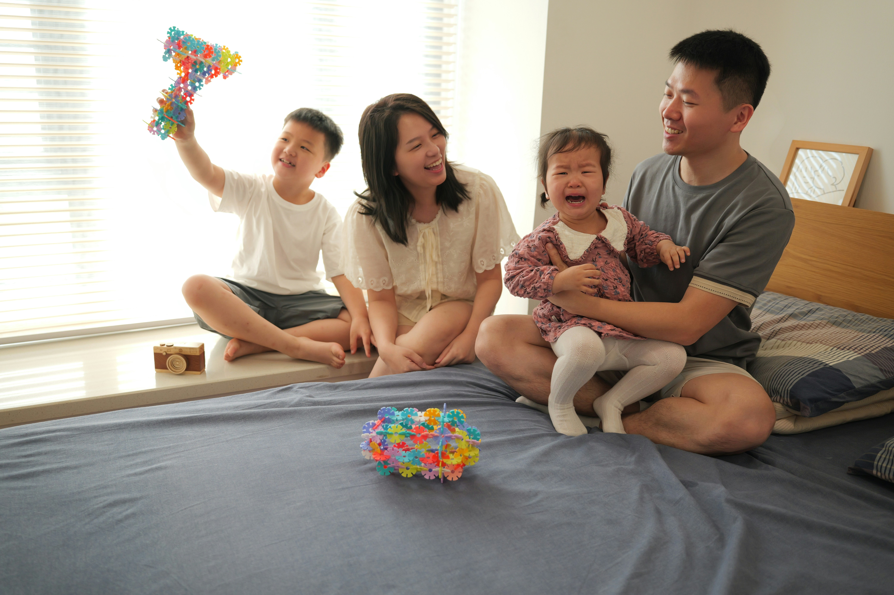
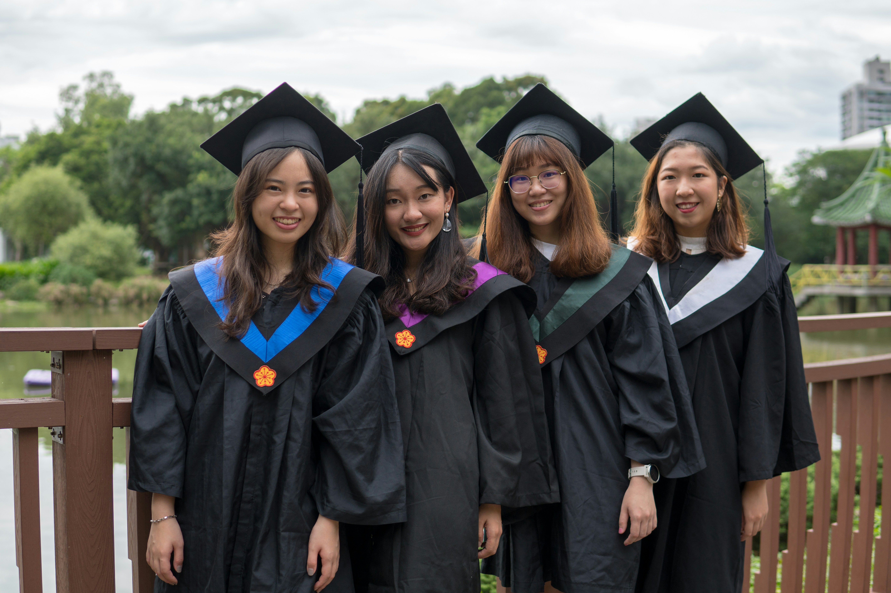
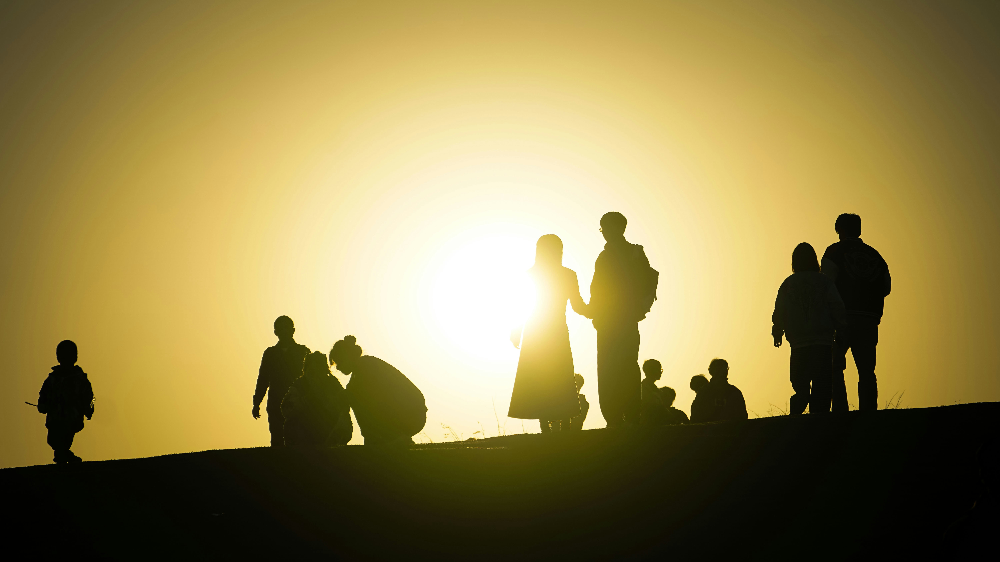
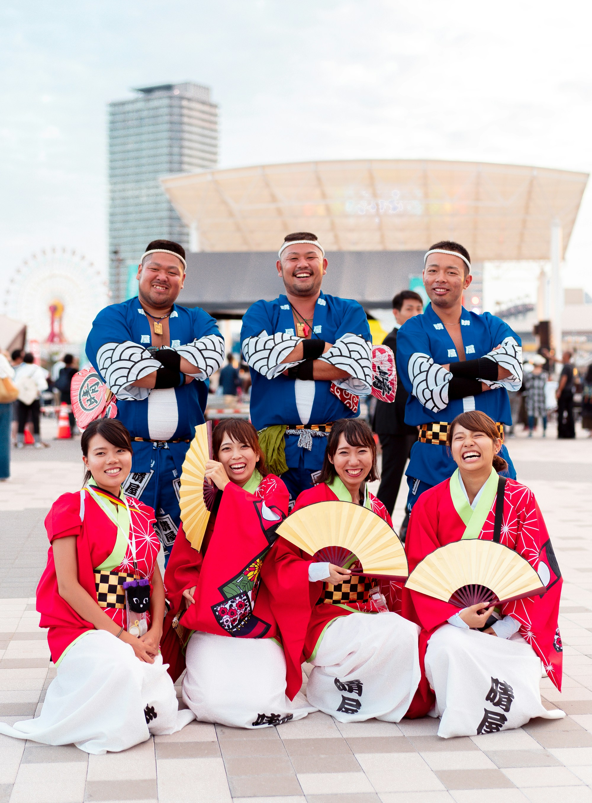

01
家族の日常
Everyday Family Stories
ご自宅、公園、お散歩など、 普段の暮らしの中で過ごす自然な家族時間を撮影します。

家族の時間を自然なままに
Preserve your family story naturally.
かしこまったポーズや無理な笑顔ではなく、 いつもの会話、しぐさ、ぬくもりを写真に残します。 家族らしさが伝わる、自然であたたかな撮影体験です。
Documentary Family Photography
Naturally Told Photographyは、日々の暮らしの中にある 小さな出来事や家族のつながりを大切にしています。 完璧に見せることよりも、その人らしさが感じられる瞬間を残します。
お子さまが遊ぶ姿、家族で食卓を囲む時間、 世代を越えて交わされる笑顔。 数年後に写真を見返したとき、その日の声や空気まで思い出せるような 写真を目指しています。
撮影への想い
撮影中は、カメラを強く意識しなくても大丈夫です。 ご家族には、歩いたり、話したり、遊んだりしながら、 いつものように過ごしていただきます。
必要なときにはやさしくご案内しますが、 一つひとつの場面を細かく作り込むことはしません。 自然に生まれる表情や動きを見守りながら撮影します。
「きれいな写真」だけでなく、 「私たちらしい写真」を残すこと。

撮影メニュー
家族の毎日に寄り添うドキュメンタリー撮影。 何年経っても思い出せる一瞬を自然な写真として残します。

01
Everyday Family Stories
ご自宅、公園、お散歩など、 普段の暮らしの中で過ごす自然な家族時間を撮影します。

02
Family Milestones
誕生日、入学、卒業、記念日など、 家族にとって特別な一日を自然な写真で残します。

03
Generational Portraits
祖父母からお子さままで、 家族みんなの自然な笑顔を大切に撮影します。

04
Community Events
学校行事、お祭り、地域イベントなど、 人とのつながりを大切にした写真を撮影します。
安心してご依頼いただくために
撮影場所、服装、当日の流れについて、 撮影前にわかりやすくご案内します。
小さなお子さまの休憩や、その日の様子に合わせて 無理のないペースで進めます。
過度な加工は行わず、その日の光、空気感、 表情を大切にした編集を行います。
撮影の流れ
ご希望の撮影内容、時期、場所、ご家族についてお聞かせください。
メールなどで撮影の流れやご希望を確認し、 当日に向けて準備します。
ご家族らしく過ごしていただきながら、 自然な表情や出来事を撮影します。
一枚ずつ丁寧に整えた写真を、 オンラインギャラリーでお届けします。
このページは、Naturally Told Photographyの英語版ウェブサイトを、 日本の利用者に向けてローカライズした授業用のデザイン例です。 日本語を主言語とし、詳しいサービス説明、撮影手順、安心感を伝える情報、 家族を中心とした写真を取り入れています。
View the original English homepage